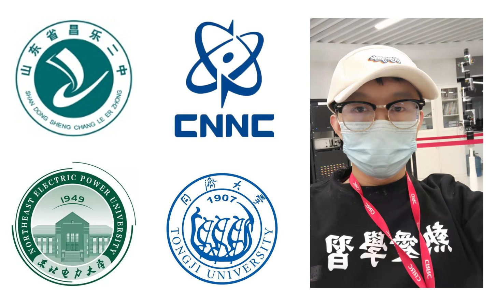
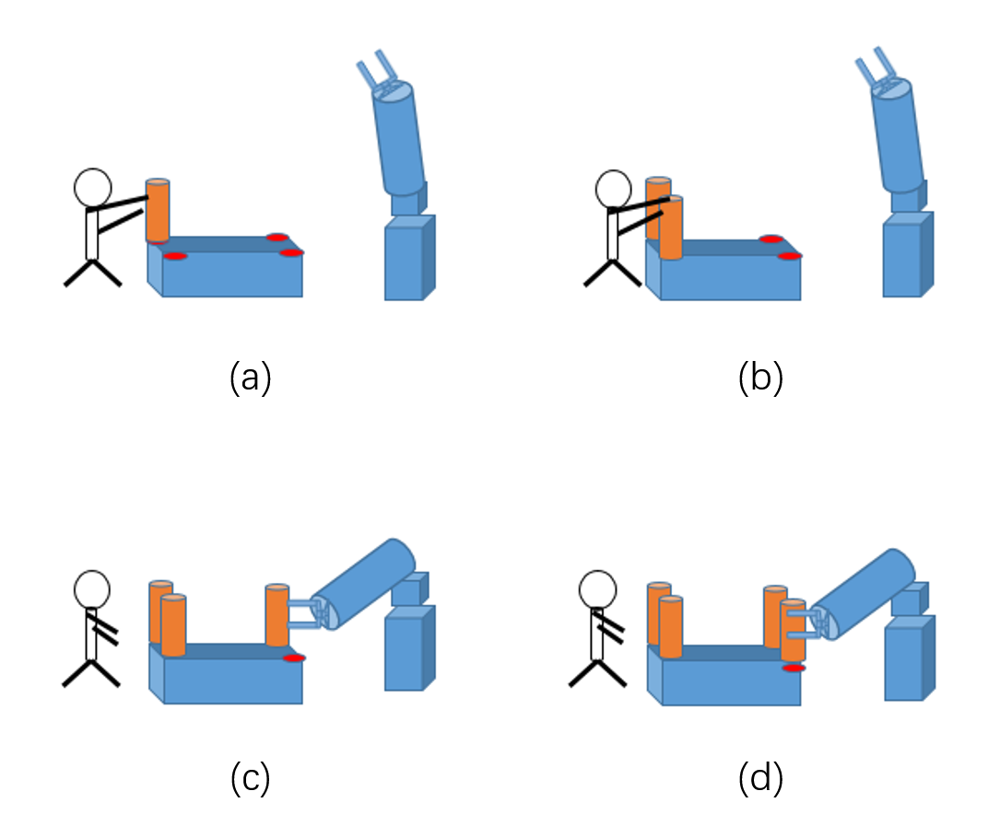
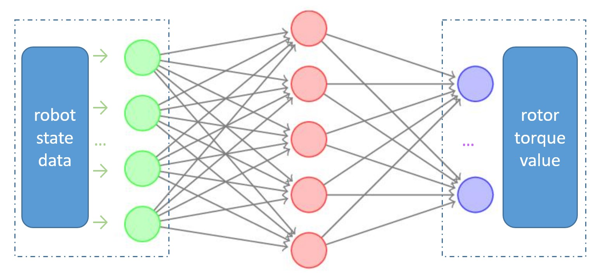
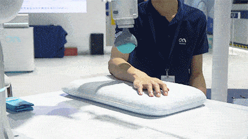
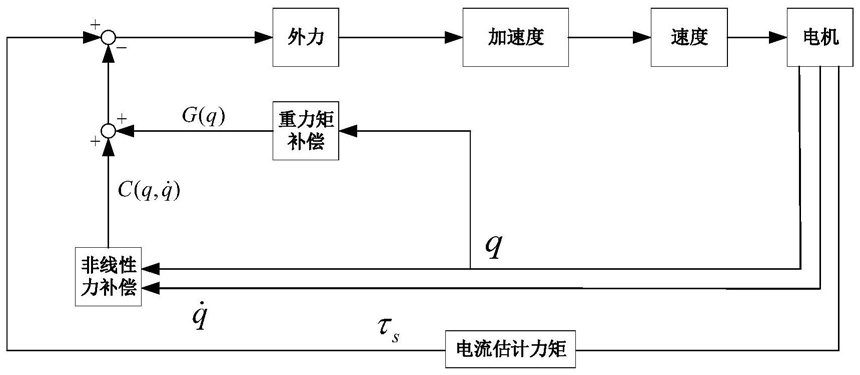
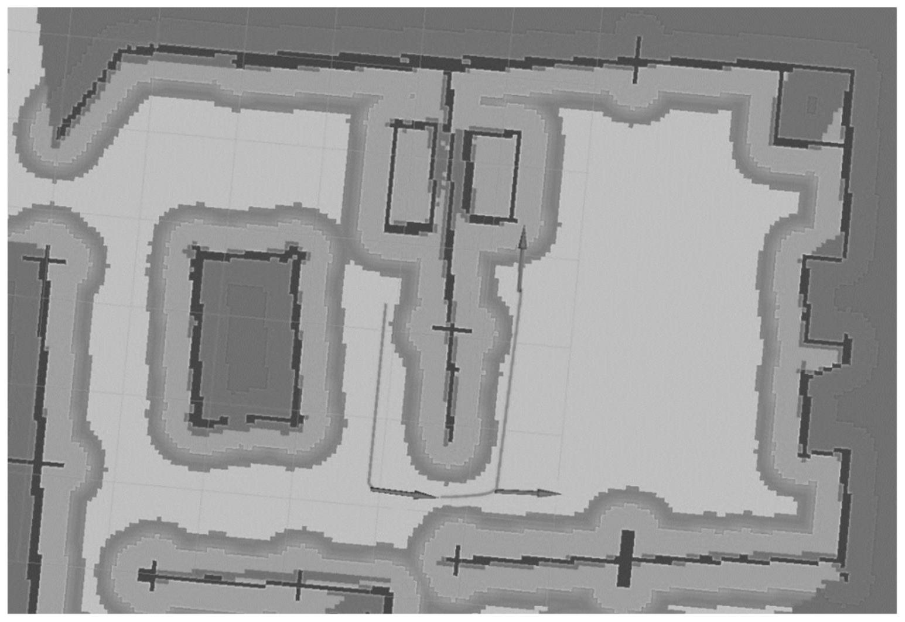
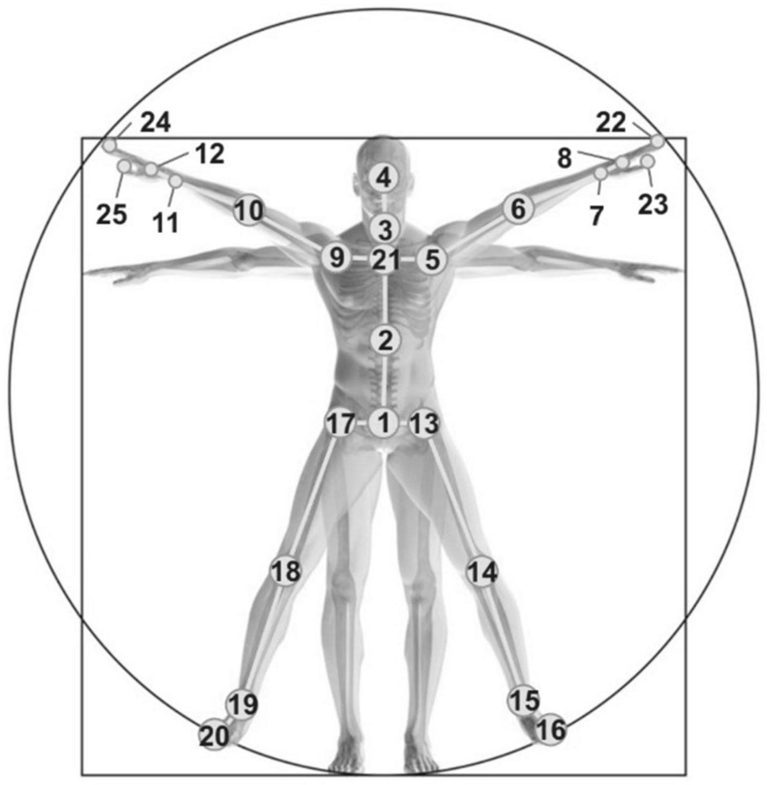
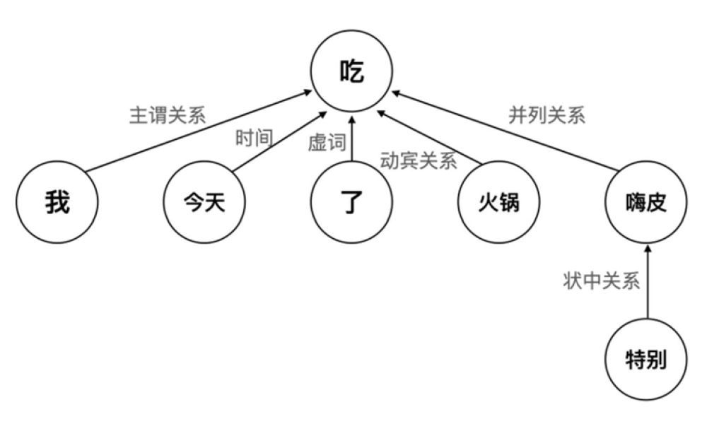

|
Heng Zhang (Jack)
张 恒
2nd Year control engineering master Student
rail @ TJU
H416, Hua Building
College of Electronic and Information Engineering
Tongji University
4800 Cao’an Highway, Shanghai 201804, China
Email: hengzhang001 at tongji dot edu dot cn


|

|
About Me
I am now a 2nd-year Master student in RAIL Lab at Tongji University (TJU),
working with Prof. Qijun Chen.
Before that, I worked as assistant nuclear power plant design engineer at SMNPC at China National Nuclear Corporation (CNNC).
And I got my B.Eng. degree of Automation at Northeast Electric Power University (NEEPU).
I have been lucky to work with Prof. Bo Li .
Highly-motivated in robotics with good foundations of math and programming. Proficient in data modeling
and analysis, and enthusiastic about computer and the corresponding interdisciplinary subject. I'm interested in Robot Learning, Intelligent Motion Control, Cognitive Learning and their applications towards Artificial General Intelligence (AGI). My current research interest focuses include:
- Human-Robot Interaction (collaborative robot motion control, and drag teaching, force control);
- Imitation learning, robot learning and representation learning;
- graph neural networks (structure and relationship learning)
- visual reasoning, attention and saliency (cognitive learning, eye tracking)
Research opportunities: I am happy to collaborate and/or answer questions about my research and USC academic programs. If you are interested, please send me an email.
I especially encourage TJU master students who want to involve exciting projects targeting top-tier conferences/journals to reach out.
News & Updates
-
[2021/07/11] Heng's ,
monthly magazine ,
of Jun, 2021
updated !
-
[2021/06/11] Heng's ,
monthly magazine ,
of May, 2021
updated !
-
[2021/05/11] Heng's ,
monthly magazine ,
of Apr, 2021
updated !
-
[2021/04/11] Heng's ,
monthly magazine ,
of Mar, 2021
updated !
|

|
A Survey on Imitation Learning for Robot Manipulation
[under review ]
Heng Zhang, Xianyou Zhong*, Zhengang Huang, Yuan Zhao, Chengju Liu, Qijun Chen (*=corresponding author)
IEEE Transactions on Cognitive and Developmental Systems@ (TCDS).
|
|

|
Sensor-Free Method with BP network to Achieve Drag Teaching on the 7-DOF Collaborative Robot
[under review ]
Heng Zhang, Xianyou Zhong, Zhengang Huang, Chengju Liu, Qijun Chen* (*=corresponding author)
China Automation Conference 2021 @ (CAC2021).
|
Intern & Work Experience
China Railway Rolling stock Corp (CRRC), Tsingtao, China (Jul. 2020 - Oct. 2020)
|
- Position: Research Intern in Control & Robotics Group
- Supervisor: senior engineer Yufu Hao
- Project: High performance universal robot control platform

|
Honors and Awards
-
Jun 2016 A Winner of The Excellent Graduate Papers directed by Prof. Bo Li in Agent Group
- Apr. 2016 Outstanding student leader model
- Oct. 2015 Innovation Scholarship for Outstanding Students
- Oct. 2015 The First Prize 2015 Siemens Cup National Industrial Automation Challenge Northeast Division
- Nov. 2014The First prize Intelligent robot in the 8th Science and Technology Sports Championship of Jilin Province
- Second Prize Scholarship
-
Oct 2015 The Third prize National College Students Electronic Design Competition, JiLin
Community Service
Community service makes me have the spirit of dedication team-work, I am willing to make more contribution to the community.
TA in Linear System Theory and Design
One-star volunteer of China Foundation for Poverty Alleviation
Student journalist in Alumni Association
Class Monitor
Software & Patents
|

|
Control Method, Device and Equipment of Collaborative Robot Drag Teaching Based on Motor Current
Qijun Chen, Heng Zhang, Chengju Liu
CN 112894821A.
[Patent]
|
|

|
An indoor navigation method for Pepper robot
Chengju Liu, Qijun Chen, Liwen Lu, Jiayuan Du, Heng Zhang,
CN 113029143A.
[Patent]
|
|

|
Motion recognition of human skeleton based on lightweight graph convolution based on channel attention
Chengju Liu, Ronghao Dang, Qijun Chen, Heng Zhang
CN113111760A.
[Patent]
|
|

|
A text feature construction method based on Word2Vec and syntactic dependency tree
Qijun Chen, Qiuchen Wang, Chengju Liu, Heng Zhang
CN113111653A.
[Patent]
|
Acknowledgements
I am very grateful to my advisor Prof. Chen and other teachers, my friends and classmates, who are Xianyou Zhong, Haoran Sun, Liang Tang, Zhengang Huang, etc.
Last update: Aug. 3, 2021
|